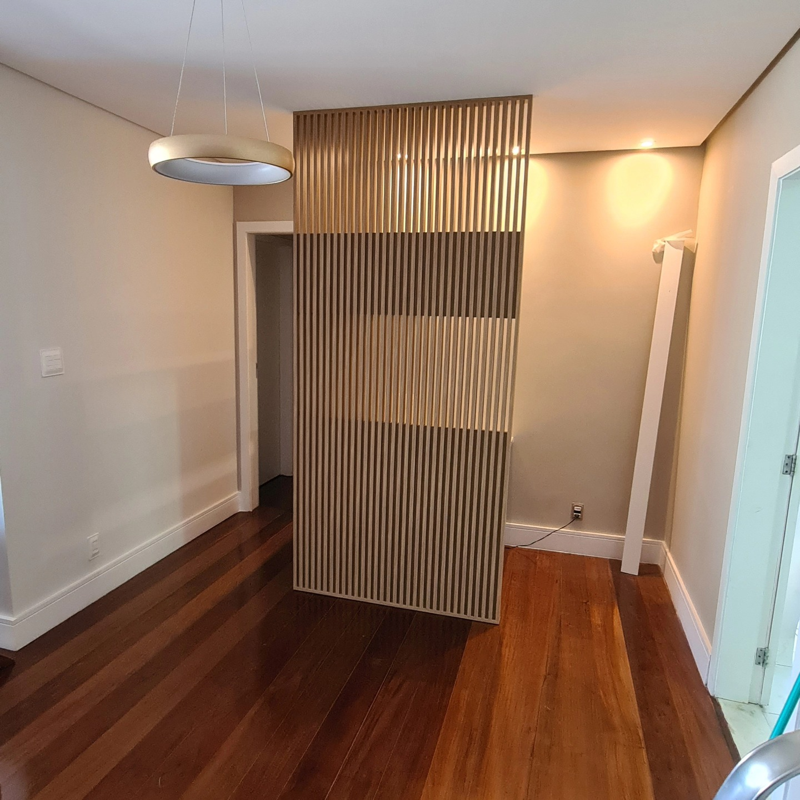
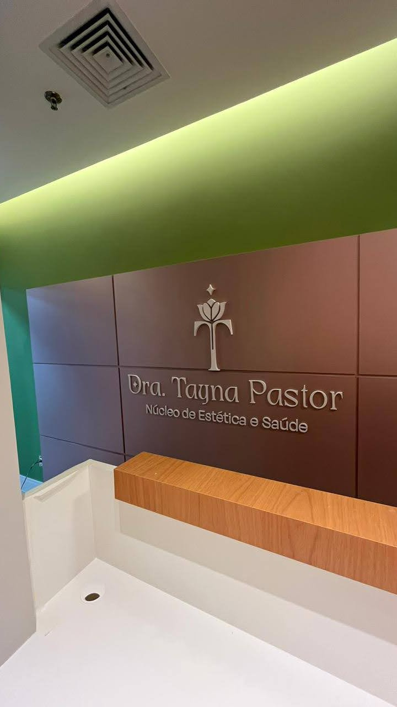
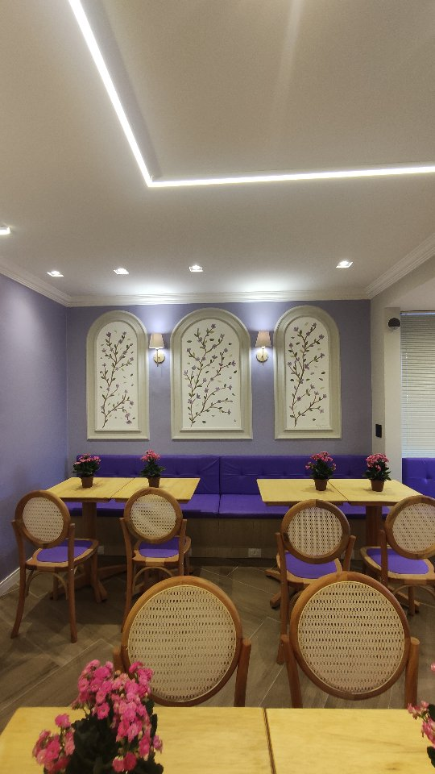
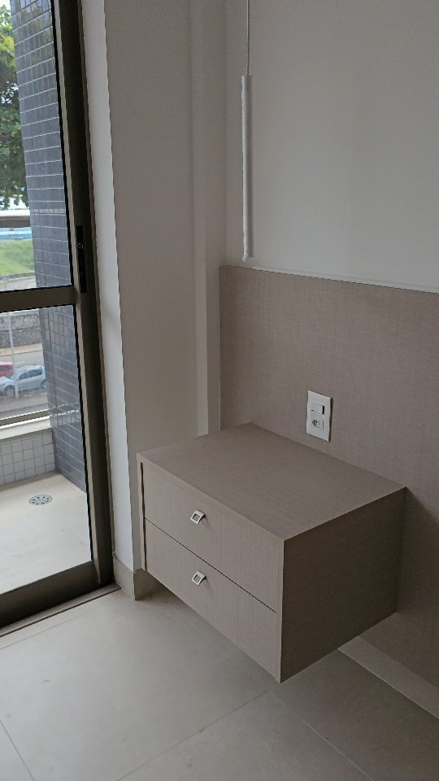
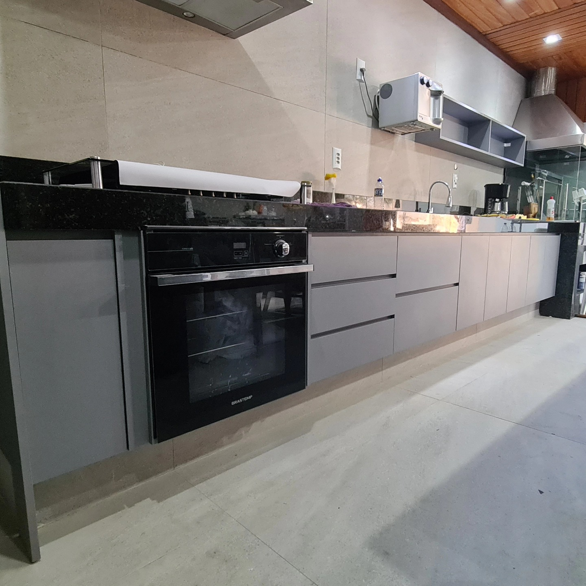

Comercial
Recepção de clínica odontológica
Balcão de atendimento e painel de fundo. Projeto em parceria com a arquiteta Bethânia César.



Lauro de Freitas, Bahia
Painéis ripados, armários e balcões feitos para ambientes residenciais e comerciais em Lauro de Freitas.
Explorar projetosPortfólio
Três ambientes executados pela CS. Abra os Reels para ver os móveis instalados.
Comercial
Balcão de atendimento e painel de fundo. Projeto em parceria com a arquiteta Bethânia César.

Assistir ReelResidencial
Criado-mudo suspenso integrado ao painel da cabeceira.
Comercial
Marcenaria do salão do Café Flor do Monte. Projeto de Leal Maia Arquitetura.

Sob medida
Neste projeto, os armários claros acompanham a bancada escura. As gavetas e portas ficam ao alcance de quem usa a área de preparo.
Orçamentos
Envie o bairro, fotos do ambiente e medidas aproximadas pelo WhatsApp. Se tiver uma planta, pode anexar na conversa.
Pedir orçamento pelo WhatsApp Falar pelo Instagram ↗